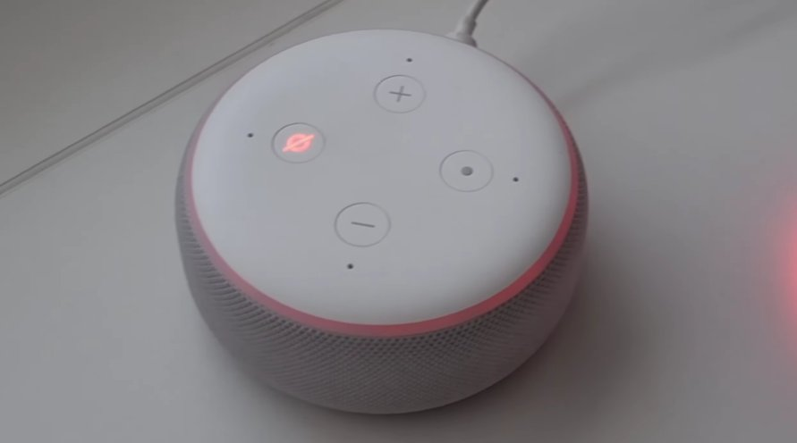

You Were Just Trying to Set a Timer, Weren’t You?
You walk into the kitchen, say “Alexa, set a timer for ten minutes,” and nothing happens. You glance over at your Echo and there it is — a glowing red ring sitting there like a bad omen. No response, no familiar chime, just that ominous crimson glow staring back at you.
It’s weirdly unsettling for something so small.
If you’ve never seen it before, the red ring on an Amazon Echo can feel like your device just gave up on life. But here’s the thing — in the vast majority of cases, it hasn’t. The red ring is your Echo’s way of telling you something specific, and once you know what it’s saying, fixing it is usually a matter of minutes, not days.
This guide walks you through exactly what the red ring means, why it happens, and how to fix it — starting with the quickest, easiest solutions first.
What Does the Red Ring Actually Mean?
The red ring on your Amazon Echo is not random. Amazon uses different light colors to communicate different states, and red has two very distinct meanings:
A spinning or solid red ring means your Echo’s microphone has been muted. The mic button on top of the device has been pressed, either intentionally or by accident. When the mic is off, Alexa can’t hear you at all — which is why she seems completely unresponsive. This is the most common cause of the red ring and the easiest to fix.
A red ring combined with an unresponsive device (won’t respond to button presses, seems frozen, or won’t connect) typically points to a software crash, a network connectivity failure, or a firmware issue. In this case, the Echo’s internal software has hit a wall and needs a nudge to get back on track.
In plain English: the red ring almost never means your Echo is broken. It means it’s either deaf (mic off) or confused (software glitch). Both are fixable.
Tools You’ll Need
Good news — you don’t need a single tool from your garage for this one. Here’s everything you’ll need:
- Your Amazon Echo device
- Your phone or computer (to access the Alexa app)
- Your Wi-Fi network name and password (just in case)
- About 5–15 minutes of your time
No screwdrivers, no multimeters, no technical background required.
Step-by-Step Fixes (Easiest to Hardest)
Work through these in order. The fix is almost always found in the first two steps — but if not, keep going.
Before anything else, check this. It takes five seconds and solves the problem more often than you’d think.
- Look at the top of your Echo for the microphone button — it has a small microphone icon on it.
- Press it once.
- Watch the ring — if it turns blue or orange, the mic is back on and Alexa can hear you again.
- Say “Alexa, what time is it?” to confirm she’s responding normally.
If the ring turns blue and Alexa responds, you’re done. If the ring stays red or the device still seems unresponsive, move on to the next fix.

Just like your phone or laptop, your Echo benefits enormously from a simple restart. It clears temporary software errors, refreshes the network connection, and gives the device a clean slate.
- Unplug the power adapter from the back of your Echo (or from the wall outlet).
- Wait a full 30 seconds — don’t rush this. The device needs time to fully discharge.
- Plug it back in and wait for it to fully boot up. You’ll see the ring go through its startup sequence — orange, then blue.
- Once the ring settles, say “Alexa, hello” to test the response.
This fix resolves the frozen or crash-related red ring the majority of the time. If it comes back after a few minutes, keep going.
An Echo that can’t reach the internet will sometimes display a red or orange ring and refuse to respond normally. Your Wi-Fi might be the hidden culprit here.
- On your phone, open the Alexa app.
- Tap the Devices tab at the bottom, then select your Echo.
- Check the connection status — if it shows “Offline,” your Echo has lost its Wi-Fi connection.
- Check whether other devices in your home can connect to Wi-Fi. If nothing can, the issue is your router, not the Echo.
- Try restarting your router by unplugging it, waiting 30 seconds, and plugging it back in.
- Once your Wi-Fi is back up, your Echo should reconnect automatically within a minute or two.
If your Wi-Fi is working fine but the Echo is still offline, try the next step.
Sometimes the Echo loses its saved Wi-Fi credentials — especially after a router reset, a new internet provider, or a password change. You’ll need to re-enter your network details through the Alexa app.
- Open the Alexa app on your phone.
- Tap Devices, then tap the “+” icon in the top right corner.
- Select Add Device, then choose Amazon Echo, and follow the on-screen prompts.
- When prompted, press and hold the Action button (the dot icon) on top for about 5 seconds until the ring turns orange.
- Follow the app’s steps to select your Wi-Fi network and enter the password.
- Once connected, the ring will turn blue briefly, then go dark — meaning everything is working.
If the red ring keeps returning or the device is still behaving strangely after all the above steps, a full factory reset will wipe everything and start fresh.
For Echo (3rd and 4th generation) and Echo Dot:
- Press and hold the Action button (the dot) for 25 seconds.
- The ring will turn orange, then blue, then go off.
- When it lights up orange again, the reset is complete and the device is in setup mode.
For older Echo models (1st and 2nd generation):
- Use a paperclip or pin to press the reset button at the bottom of the device.
- Hold it for about 5 seconds until the ring turns orange.
After resetting, open the Alexa app and re-add your Echo as a new device. Reconnect to Wi-Fi, sign in to your Amazon account, and reconfigure your preferences.
In rare cases, an Echo can get stuck during a firmware update, leaving it in a broken state with the red ring showing. Here’s how to check and resolve this.
- Open the Alexa app and go to Devices.
- Select your Echo and look for any notification about a pending update.
- Make sure your Echo is plugged in and connected to Wi-Fi — firmware updates only install automatically when both conditions are met.
- Leave the device plugged in overnight with a stable Wi-Fi connection. Most stuck updates resolve on their own within a few hours.
- If you suspect a corrupted firmware update, the factory reset in Fix 5 will also wipe and reinstall the firmware from scratch.
When to Contact Amazon Support
Amazon Echo devices are designed to be entirely user-maintained through software — there are no user-serviceable internal parts. There are situations where you should contact Amazon directly:
- The red ring persists through a full factory reset and the device never completes setup — this can indicate hardware failure.
- The device gets hot to the touch, has a burning smell, or shows visible physical damage. Unplug it immediately and do not use it.
- The Echo won’t power on at all — no ring, no lights, no response even when plugged into a different outlet with a different cable.
- Your Echo is still within its warranty period (typically one year from purchase). Amazon will often replace a defective unit for free.
To reach Amazon support: visit amazon.com/devicesupport or open the Alexa app and go to More > Help & Feedback > Contact Us.
Quick Recap
| Fix | Difficulty | Time Needed |
|---|---|---|
| Check / unmute the microphone button | Very Easy | 10 seconds |
| Restart the Echo (unplug and replug) | Very Easy | 2 minutes |
| Check and restart your Wi-Fi router | Easy | 5 minutes |
| Reconnect Echo to Wi-Fi via Alexa app | Easy | 5 minutes |
| Factory reset the Echo | Moderate | 10 minutes |
| Check for stuck firmware update | Easy | Overnight |
Final Thoughts
Start at the top. Nine times out of ten, the red ring is nothing more than an accidentally muted microphone or a momentary software hiccup — and you’ll have it sorted before your coffee gets cold.
The red ring looks dramatic, but it’s really just your Echo asking for a little attention. Give it a quick unmute or a 30-second reboot and you’ll almost certainly be back to asking Alexa for the weather in no time.
Still seeing that red ring? Drop your Echo model number in the comments and we’ll help you troubleshoot the specific issue.